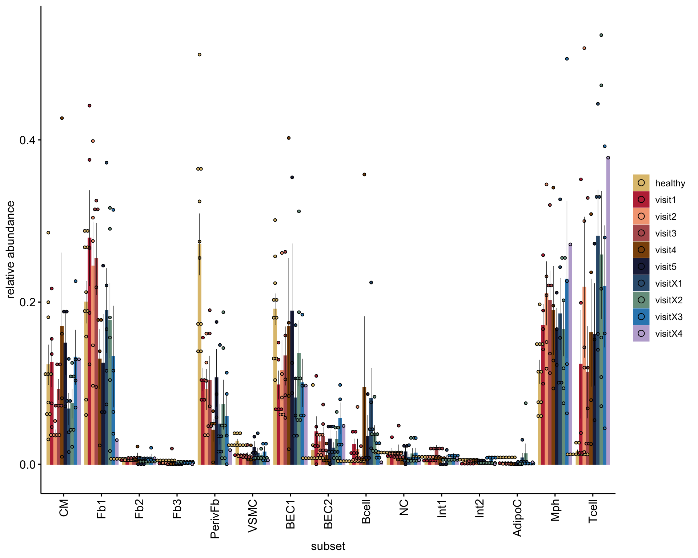
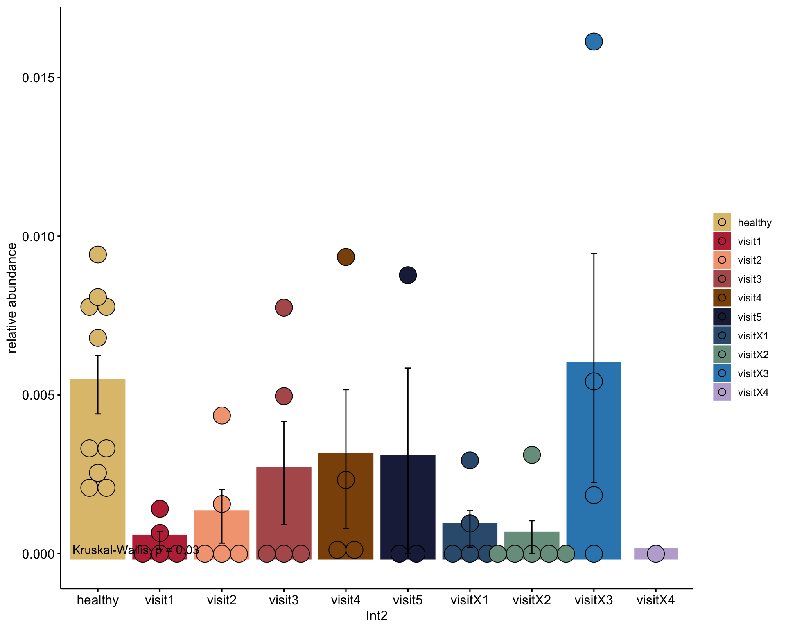

CarTransLateRej - RelativeAbundances
I. Hanka
2025-05-23
Last updated: 2025-07-08
Checks: 5 2
Knit directory: CarTransLateRej/
This reproducible R Markdown analysis was created with workflowr (version 1.7.1). The Checks tab describes the reproducibility checks that were applied when the results were created. The Past versions tab lists the development history.
The R Markdown file has unstaged changes. To know which version of
the R Markdown file created these results, you’ll want to first commit
it to the Git repo. If you’re still working on the analysis, you can
ignore this warning. When you’re finished, you can run
wflow_publish to commit the R Markdown file and build the
HTML.
Great job! The global environment was empty. Objects defined in the global environment can affect the analysis in your R Markdown file in unknown ways. For reproduciblity it’s best to always run the code in an empty environment.
The command set.seed(20250218) was run prior to running
the code in the R Markdown file. Setting a seed ensures that any results
that rely on randomness, e.g. subsampling or permutations, are
reproducible.
Great job! Recording the operating system, R version, and package versions is critical for reproducibility.
Nice! There were no cached chunks for this analysis, so you can be confident that you successfully produced the results during this run.
Using absolute paths to the files within your workflowr project makes it difficult for you and others to run your code on a different machine. Change the absolute path(s) below to the suggested relative path(s) to make your code more reproducible.
| absolute | relative |
|---|---|
| /Users/immbio/Desktop/CarTransLateRej/data/CarTransLateRej_allmerged_seurat.rds | data/CarTransLateRej_allmerged_seurat.rds |
Great! You are using Git for version control. Tracking code development and connecting the code version to the results is critical for reproducibility.
The results in this page were generated with repository version 3145157. See the Past versions tab to see a history of the changes made to the R Markdown and HTML files.
Note that you need to be careful to ensure that all relevant files for
the analysis have been committed to Git prior to generating the results
(you can use wflow_publish or
wflow_git_commit). workflowr only checks the R Markdown
file, but you know if there are other scripts or data files that it
depends on. Below is the status of the Git repository when the results
were generated:
Ignored files:
Ignored: .DS_Store
Ignored: .Rhistory
Ignored: .Rproj.user/
Ignored: analysis/.DS_Store
Ignored: analysis/.RData
Ignored: analysis/.Rhistory
Ignored: data/
Untracked files:
Untracked: Old Analysis/
Untracked: analysis/Clinical Phenotypes.Rmd
Untracked: analysis/Dotplot_0.25.pdf
Untracked: analysis/Dotplot_clusternames.pdf
Untracked: analysis/Heatmap_0.25.pdf
Untracked: analysis/Heatmap_ACR.pdf
Untracked: analysis/Merging.Rmd
Untracked: analysis/QC-UMAPS.Rmd
Untracked: analysis/markerGenesclusterName
Untracked: analysis/markerGenesclusterName_0.25
Untracked: analysis/markerGenesclusterName_0.25.txt
Untracked: analysis/markerGenesclusterName_0.25.xlsx
Unstaged changes:
Modified: .Rprofile
Modified: .gitattributes
Modified: .gitignore
Modified: CarTransLateRej.Rproj
Modified: README.md
Modified: _workflowr.yml
Modified: analysis/MarkerGenes.Rmd
Deleted: analysis/Merge-QC-UMAPS.Rmd
Modified: analysis/RelativeAbundances.Rmd
Modified: analysis/_site.yml
Modified: analysis/about.Rmd
Modified: analysis/index.Rmd
Modified: analysis/license.Rmd
Modified: code/README.md
Modified: output/README.md
Note that any generated files, e.g. HTML, png, CSS, etc., are not included in this status report because it is ok for generated content to have uncommitted changes.
These are the previous versions of the repository in which changes were
made to the R Markdown (analysis/RelativeAbundances.Rmd)
and HTML (docs/RelativeAbundances.html) files. If you’ve
configured a remote Git repository (see ?wflow_git_remote),
click on the hyperlinks in the table below to view the files as they
were in that past version.
| File | Version | Author | Date | Message |
|---|---|---|---|---|
| Rmd | 3145157 | angeldemartin | 2025-02-21 | Feb25-2 |
| html | 3145157 | angeldemartin | 2025-02-21 | Feb25-2 |
| Rmd | 7af6134 | angeldemartin | 2025-02-21 | Feb25 |
load packages
load file
##load merged file
fileNam <- "/Users/immbio/Desktop/CarTransLateRej/data/CarTransLateRej_allmerged_seurat.rds"
seuratM <- readRDS(fileNam)##set color vectors
### patient
HH_1 <- c("o28576_1_08-8_20220525_Hu_nucseq_Graz_8_HH_GEM")
HH_3 <- c("o28576_1_10-10_20220525_Hu_nucseq_Graz_10_HH_GEM")
HH_4 <- c("o28576_1_11-11_20220525_Hu_nucseq_Graz_11_HH_GEM")
HH_5 <- c("o28576_1_12-12_20220525_Hu_nucseq_Graz_12_HH_GEM")
HH_6 <- c("o292731_1-1_20220818_Hu_nucseq_Graz_9_HH_GEM")
HH_7 <- c("o292731_2-2_20220818_Hu_nucseq_Graz_13_HH_GEM")
HH_8 <- c("o294781_01-1_20220912_Hu_nucseq_Graz_21_HH_GEM")
HH_9 <- c("o294781_02-2_20220912_Hu_nucseq_Graz_22_HH_GEM")
HH_10 <- c("o294781_03-3_20220912_Hu_nucseq_Graz_23_HH_GEM")
HH_11 <- c("o294781_04-4_20220912_Hu_nucseq_Graz_24_HH_GEM")
seuratM$patient <- "pat_nr"
seuratM$patient[grepl("HTx002|EMB002", seuratM$dataset)] <- "CarTransPat2"
seuratM$patient[grepl("HTx004|EMB004", seuratM$dataset)] <- "CarTransPat4"
seuratM$patient[grepl("HTx006|EMB006", seuratM$dataset)] <- "CarTransPat6"
seuratM$patient[grepl("HTx007|EMB007", seuratM$dataset)] <- "CarTransPat7"
seuratM$patient[grepl("HTx008|EMB008", seuratM$dataset)] <- "CarTransPat8"
seuratM$patient[grepl("HTx018|EMB0018", seuratM$dataset)] <- "CarTransPat18"
seuratM$patient[grepl("HTx019|EMB0019", seuratM$dataset)] <- "CarTransPat19"
seuratM$patient[which(seuratM$dataset %in% HH_1)] <- "HH1"
seuratM$patient[which(seuratM$dataset %in% HH_3)] <- "HH3"
seuratM$patient[which(seuratM$dataset %in% HH_4)] <- "HH4"
seuratM$patient[which(seuratM$dataset %in% HH_5)] <- "HH5"
seuratM$patient[which(seuratM$dataset %in% HH_6)] <- "HH6"
seuratM$patient[which(seuratM$dataset %in% HH_7)] <- "HH7"
seuratM$patient[which(seuratM$dataset %in% HH_8)] <- "HH8"
seuratM$patient[which(seuratM$dataset %in% HH_9)] <- "HH9"
seuratM$patient[which(seuratM$dataset %in% HH_10)] <- "HH10"
seuratM$patient[which(seuratM$dataset %in% HH_11)] <- "HH2"
table(seuratM$patient)
CarTransPat18 CarTransPat19 CarTransPat2 CarTransPat4 CarTransPat6 CarTransPat7 CarTransPat8
1206 2493 1379 9000 2817 6486 606
HH1 HH10 HH2 HH3 HH4 HH5 HH6
4005 866 2181 3922 4265 3853 6434
HH7 HH8 HH9
11568 1465 2064 ordpatients <- c("HH1", "HH2", "HH3", "HH4", "HH5", "HH6", "HH7", "HH8", "HH9", "HH10","CarTransPat2", "CarTransPat4", "CarTransPat6", "CarTransPat7", "CarTransPat8", "CarTransPat18", "CarTransPat19")
seuratM$clusterName <- "clusterName"
seuratM$clusterName[which(seuratM$RNA_snn_res.0.25 %in% "0" )] <- "Fb1"
seuratM$clusterName[which(seuratM$RNA_snn_res.0.25 %in% "1" )] <- "PerivFb"
seuratM$clusterName[which(seuratM$RNA_snn_res.0.25 %in% "2" )] <- "BEC1"
seuratM$clusterName[which(seuratM$RNA_snn_res.0.25 %in% "3" )] <- "Mph"
seuratM$clusterName[which(seuratM$RNA_snn_res.0.25 %in% "4" )] <- "CM"
seuratM$clusterName[which(seuratM$RNA_snn_res.0.25 %in% "5" )] <- "Tcell"
seuratM$clusterName[which(seuratM$RNA_snn_res.0.25 %in% "6" )] <- "BEC2"
seuratM$clusterName[which(seuratM$RNA_snn_res.0.25 %in% "7" )] <- "VSMC"
seuratM$clusterName[which(seuratM$RNA_snn_res.0.25 %in% "8" )] <- "Bcell"
seuratM$clusterName[which(seuratM$RNA_snn_res.0.25 %in% "9" )] <- "NC"
seuratM$clusterName[which(seuratM$RNA_snn_res.0.25 %in% "10" )] <- "Int1"
seuratM$clusterName[which(seuratM$RNA_snn_res.0.25 %in% "11" )] <- "Fb2"
seuratM$clusterName[which(seuratM$RNA_snn_res.0.25 %in% "12" )] <- "Int2"
seuratM$clusterName[which(seuratM$RNA_snn_res.0.25 %in% "13" )] <- "Fb3"
seuratM$clusterName[which(seuratM$RNA_snn_res.0.25 %in% "14" )] <- "AdipoC"
##set color vectors
colclusterName <- c("#67001f", "#003c30","#01665e","#66C2A5","#355C7D","#202547","#8c510a", "#B09C85", "#628395", "#4e5a4c","pink", "#3299CA", "#725663FF","#B45B5C","#FEE08B")
names(colclusterName) <- c("CM", "Fb1","Fb2","Fb3", "PerivFb","VSMC", "BEC1", "BEC2", "Bcell", "NC", "Int1", "Int2", "AdipoC", "Mph", "Tcell")
coldiseaseCond <- c("#dfc27d","#BE3144","#f4a582","#B45B5C","#8c510a","#202547","#355C7D","#779d8d", "#3288BD", "#BEAED4")
names(coldiseaseCond) <- c("healthy", "visit1", "visit2" ,"visit3", "visit4", "visit5", "visitX1", "visitX2", "visitX3", "visitX4")order datasets
###diseaseCond
datList <- NULL
for(con in unique(seuratM$diseaseCond)){
seuratSub <- subset(seuratM, diseaseCond==con)
print(dim(seuratSub))
dat_con <- as.data.frame(table(seuratSub$clusterName)) %>%
mutate(percent=Freq/ncol(seuratSub)) %>% mutate(diseaseCond=con)
datList[[con]] <- dat_con
}[1] 42834 4471
[1] 42834 4628
[1] 42834 2032
[1] 42834 2423
[1] 42834 2784
[1] 42834 5208
[1] 42834 512
[1] 42834 1527
[1] 42834 402
[1] 42834 40623dat_all <- do.call("rbind", datList)
orddiseaseCond <- c("healthy", "visit1", "visit2" ,"visit3", "visit4", "visit5", "visitX1", "visitX2", "visitX3", "visitX4")
## plot abundance
ggbarplot(dat_all, x= "diseaseCond", y= "percent", fill = "Var1", legend = "right", palette = colclusterName, legend.titel = "cluster", ylab = "frequency") + theme(axis.text.x = element_text(angle = 90, vjust = 0.5, hjust=1)) + scale_x_discrete(limits=orddiseaseCond)
| Version | Author | Date |
|---|---|---|
| 3145157 | angeldemartin | 2025-02-21 |
###patient_diseaseCond
seuratM$patient_diseaseCond <- paste0(seuratM$patient, '_', seuratM$diseaseCond)
datList <- NULL
for(con in unique(seuratM$patient_diseaseCond)){
seuratSub <- subset(seuratM, patient_diseaseCond==con)
print(dim(seuratSub))
dat_con <- as.data.frame(table(seuratSub$clusterName)) %>%
mutate(percent=Freq/ncol(seuratSub)) %>% mutate(patient_diseaseCond=con)
datList[[con]] <- dat_con
}[1] 42834 493
[1] 42834 1524
[1] 42834 1688
[1] 42834 1838
[1] 42834 857
[1] 42834 258
[1] 42834 403
[1] 42834 638
[1] 42834 863
[1] 42834 1044
[1] 42834 453
[1] 42834 431
[1] 42834 432
[1] 42834 1166
[1] 42834 104
[1] 42834 321
[1] 42834 114
[1] 42834 340
[1] 42834 366
[1] 42834 62
[1] 42834 60
[1] 42834 382
[1] 42834 42
[1] 42834 430
[1] 42834 199
[1] 42834 4026
[1] 42834 294
[1] 42834 706
[1] 42834 907
[1] 42834 472
[1] 42834 408
[1] 42834 642
[1] 42834 737
[1] 42834 186
[1] 42834 402
[1] 42834 64
[1] 42834 542
[1] 42834 93
[1] 42834 4005
[1] 42834 3922
[1] 42834 4265
[1] 42834 3853
[1] 42834 6434
[1] 42834 11568
[1] 42834 1465
[1] 42834 2064
[1] 42834 866
[1] 42834 2181dat_all <- do.call("rbind", datList)
ordpatient_diseasecond <- unique(seuratM$patient_diseaseCond)[order(
!grepl("healthy", unique(seuratM$patient_diseaseCond)), # "HH" first (FALSE is sorted before TRUE)
!grepl("visit1", unique(seuratM$patient_diseaseCond)), # "visit1" second
!grepl("visit2", unique(seuratM$patient_diseaseCond)), # "visit2" third
!grepl("visit3", unique(seuratM$patient_diseaseCond)), # "visit3" forth
!grepl("visit4", unique(seuratM$patient_diseaseCond)), # "visit4" fifth
!grepl("visit5", unique(seuratM$patient_diseaseCond)), # "visit5" sixth
!grepl("visitX1", unique(seuratM$patient_diseaseCond)), # "visitX1" seventh
!grepl("visitX2", unique(seuratM$patient_diseaseCond)), # "visitX2" eighth
!grepl("visitX3", unique(seuratM$patient_diseaseCond)), # "visitX3" ninth
!grepl("visitX4", unique(seuratM$patient_diseaseCond)), # "visitX4" tenth
unique(seuratM$patient_diseaseCond) # Alphabetical order within groups
)]
## plot abundance
ggbarplot(dat_all, x= "patient_diseaseCond", y= "percent", fill = "Var1", palette = colclusterName, legend = "right", legend.titel = "cluster", ylab = "frequency") + theme(axis.text.x = element_text(angle = 90, vjust = 0.5, hjust=1)) + scale_x_discrete(limits=ordpatient_diseasecond)
| Version | Author | Date |
|---|---|---|
| 3145157 | angeldemartin | 2025-02-21 |
ordpatient_diseasecond <- unique(seuratM$patient_diseaseCond)[order(
!grepl("healthy", unique(seuratM$patient_diseaseCond)), # "HH" first (FALSE is sorted before TRUE)
!grepl("CarTransPat4", unique(seuratM$patient_diseaseCond)), # CarTransPat4 second
!grepl("CarTransPat6", unique(seuratM$patient_diseaseCond)),
!grepl("CarTransPat7", unique(seuratM$patient_diseaseCond)),
!grepl("CarTransPat18", unique(seuratM$patient_diseaseCond)),
unique(seuratM$patient_diseaseCond) # Alphabetical order within groups
)]
## plot abundance
ggbarplot(dat_all, x= "patient_diseaseCond", y= "percent", fill = "Var1", palette = colclusterName, legend = "right", legend.titel = "cluster", ylab = "frequency") + theme(axis.text.x = element_text(angle = 90, vjust = 0.5, hjust=1)) + scale_x_discrete(limits=ordpatient_diseasecond)
| Version | Author | Date |
|---|---|---|
| 3145157 | angeldemartin | 2025-02-21 |
fractions according to patients&disease cond
##set order
seuratM$diseaseCond <- factor(seuratM$diseaseCond, levels= c("healthy", "visit1", "visit2" ,"visit3", "visit4", "visit5", "visitX1", "visitX2", "visitX3", "visitX4"))
## 1. create data.frame with cluster counts per patient
## change "RNA_snn_res.0.25" to subset/cluster you're interested in ...
datFrac <- data.frame(table(seuratM$patient_diseaseCond, seuratM$clusterName))
colnames(datFrac) <- c("patient_diseaseCond", "subset", "cnt")
## 2. get total counts per patient to compute relative abundances from
## I added cond here as grouping variable for the plotting later ...
datSumPat <- data.frame(table(seuratM$patient_diseaseCond, seuratM$diseaseCond)) %>%
filter(Freq >0)
colnames(datSumPat) <- c("patient_diseaseCond", "diseaseCond", "cntPatTot")
## 3. join data.frames to compute rel abundances per patient
datFracSum <- datFrac %>% left_join(., datSumPat, by = "patient_diseaseCond") %>%
mutate(relCnt = cnt/cntPatTot)
## plot barplot with abundances for each subset grouped by cond
ggbarplot(datFracSum, x = "subset", y = "relCnt",
fill = "diseaseCond", color = "diseaseCond",
palette = coldiseaseCond,
add = c("mean_se", "dotplot"),
add.params = list(color="black", fill="diseaseCond", size=0.2),
position = position_dodge(0.9),
xlab = "subset",
ylab = "relative abundance",
legend = "right",
legend.title = "") +
rotate_x_text(angle = 90) 
| Version | Author | Date |
|---|---|---|
| 3145157 | angeldemartin | 2025-02-21 |
## plot barplot with abundances for individual subsets
Idents(seuratM) <- seuratM$clusterName
clusterVec <- levels(seuratM)
createClusterPlot <- function(cluster) {
datFracSumC <- datFracSum %>% filter(subset == cluster)
ggbarplot(datFracSumC, x = "diseaseCond", y = "relCnt",
fill = "diseaseCond", color = "diseaseCond",
palette = coldiseaseCond,
add = c("mean_se", "dotplot"),
size = 5,
add.params = list(color = "black", fill = "diseaseCond"),
position = position_dodge(0.9),
xlab = cluster,
ylab = "relative abundance",
legend = "right",
legend.title = "") +
stat_compare_means(method = "kruskal.test", label.y = 0.0)
}
lapply(clusterVec, createClusterPlot)[[1]]
| Version | Author | Date |
|---|---|---|
| 3145157 | angeldemartin | 2025-02-21 |
[[2]]
| Version | Author | Date |
|---|---|---|
| 3145157 | angeldemartin | 2025-02-21 |
[[3]]
| Version | Author | Date |
|---|---|---|
| 3145157 | angeldemartin | 2025-02-21 |
[[4]]
| Version | Author | Date |
|---|---|---|
| 3145157 | angeldemartin | 2025-02-21 |
[[5]]
| Version | Author | Date |
|---|---|---|
| 3145157 | angeldemartin | 2025-02-21 |
[[6]]
| Version | Author | Date |
|---|---|---|
| 3145157 | angeldemartin | 2025-02-21 |
[[7]]
| Version | Author | Date |
|---|---|---|
| 3145157 | angeldemartin | 2025-02-21 |
[[8]]
| Version | Author | Date |
|---|---|---|
| 3145157 | angeldemartin | 2025-02-21 |
[[9]]
| Version | Author | Date |
|---|---|---|
| 3145157 | angeldemartin | 2025-02-21 |
[[10]]
| Version | Author | Date |
|---|---|---|
| 3145157 | angeldemartin | 2025-02-21 |
[[11]]
| Version | Author | Date |
|---|---|---|
| 3145157 | angeldemartin | 2025-02-21 |
[[12]]
| Version | Author | Date |
|---|---|---|
| 3145157 | angeldemartin | 2025-02-21 |
[[13]]
| Version | Author | Date |
|---|---|---|
| 3145157 | angeldemartin | 2025-02-21 |
[[14]]
| Version | Author | Date |
|---|---|---|
| 3145157 | angeldemartin | 2025-02-21 |
[[15]]
| Version | Author | Date |
|---|---|---|
| 3145157 | angeldemartin | 2025-02-21 |
#Show total counts
seuratM$patient_diseaseCond_cluster <- paste0(seuratM$patient, '_', seuratM$diseaseCond, '_', seuratM$clusterName)
TableClusterPatientDis <- table(seuratM$patient_diseaseCond_cluster)
#View(TableClusterPatientDis)
dfClusterPatDis <- as.data.frame(TableClusterPatientDis)
sub_Tcells <- dfClusterPatDis[grep("_Tcell", dfClusterPatDis$Var1),]
show(sub_Tcells) Var1 Freq
8 CarTransPat18_visit1_Tcell 1
20 CarTransPat18_visit2_Tcell 196
30 CarTransPat18_visit3_Tcell 5
43 CarTransPat18_visit4_Tcell 34
53 CarTransPat18_visitX1_Tcell 32
62 CarTransPat18_visitX2_Tcell 10
74 CarTransPat19_visit1_Tcell 248
86 CarTransPat19_visit2_Tcell 272
98 CarTransPat19_visit3_Tcell 155
110 CarTransPat19_visitX1_Tcell 133
125 CarTransPat2_visitX2_Tcell 46
139 CarTransPat2_visitX3_Tcell 289
152 CarTransPat4_visit1_Tcell 336
166 CarTransPat4_visit2_Tcell 92
179 CarTransPat4_visit3_Tcell 59
193 CarTransPat4_visit4_Tcell 1242
202 CarTransPat4_visit5_Tcell 16
215 CarTransPat4_visitX1_Tcell 464
227 CarTransPat4_visitX2_Tcell 98
240 CarTransPat6_visit1_Tcell 19
254 CarTransPat6_visit2_Tcell 13
267 CarTransPat6_visit3_Tcell 8
277 CarTransPat6_visit4_Tcell 8
286 CarTransPat6_visit5_Tcell 31
300 CarTransPat6_visitX1_Tcell 48
312 CarTransPat6_visitX2_Tcell 171
323 CarTransPat6_visitX3_Tcell 10
337 CarTransPat7_visit1_Tcell 17
351 CarTransPat7_visit2_Tcell 219
364 CarTransPat7_visit3_Tcell 8
374 CarTransPat7_visit4_Tcell 102
383 CarTransPat7_visit5_Tcell 16
396 CarTransPat7_visitX1_Tcell 144
407 CarTransPat7_visitX2_Tcell 617
417 CarTransPat7_visitX3_Tcell 52
429 CarTransPat7_visitX4_Tcell 152
438 CarTransPat8_visitX2_Tcell 10
453 CarTransPat8_visitX3_Tcell 24
468 HH1_healthy_Tcell 65
481 HH10_healthy_Tcell 12
496 HH2_healthy_Tcell 37
511 HH3_healthy_Tcell 104
525 HH4_healthy_Tcell 114
539 HH5_healthy_Tcell 29
554 HH6_healthy_Tcell 108
569 HH7_healthy_Tcell 94
582 HH8_healthy_Tcell 14
596 HH9_healthy_Tcell 30session info
date()[1] "Tue Jul 8 21:55:07 2025"sessionInfo()R version 4.4.2 (2024-10-31)
Platform: aarch64-apple-darwin20
Running under: macOS Sequoia 15.1
Matrix products: default
BLAS: /Library/Frameworks/R.framework/Versions/4.4-arm64/Resources/lib/libRblas.0.dylib
LAPACK: /Library/Frameworks/R.framework/Versions/4.4-arm64/Resources/lib/libRlapack.dylib; LAPACK version 3.12.0
locale:
[1] en_US.UTF-8/en_US.UTF-8/en_US.UTF-8/C/en_US.UTF-8/en_US.UTF-8
time zone: Europe/Zurich
tzcode source: internal
attached base packages:
[1] grid stats4 stats graphics grDevices utils datasets methods base
other attached packages:
[1] NCmisc_1.2.0 VennDiagram_1.7.3 futile.logger_1.4.3
[4] ggupset_0.4.1 gridExtra_2.3 DOSE_4.0.0
[7] enrichplot_1.26.6 msigdbr_7.5.1 org.Hs.eg.db_3.20.0
[10] AnnotationDbi_1.68.0 clusterProfiler_4.14.4 multtest_2.62.0
[13] metap_1.11 scater_1.34.0 scuttle_1.16.0
[16] destiny_3.20.0 circlize_0.4.16 muscat_1.20.0
[19] viridis_0.6.5 viridisLite_0.4.2 lubridate_1.9.4
[22] forcats_1.0.0 stringr_1.5.1 purrr_1.0.4
[25] readr_2.1.5 tidyr_1.3.1 tibble_3.2.1
[28] tidyverse_2.0.0 dplyr_1.1.4 SingleCellExperiment_1.28.1
[31] SummarizedExperiment_1.36.0 Biobase_2.66.0 GenomicRanges_1.58.0
[34] GenomeInfoDb_1.42.3 IRanges_2.40.1 S4Vectors_0.44.0
[37] BiocGenerics_0.52.0 MatrixGenerics_1.18.1 matrixStats_1.5.0
[40] pheatmap_1.0.12 ggpubr_0.6.0 ggplot2_3.5.1
[43] Seurat_5.2.1 SeuratObject_5.0.2 sp_2.2-0
loaded via a namespace (and not attached):
[1] igraph_2.1.4 ica_1.0-3 plotly_4.10.4
[4] Formula_1.2-5 zlibbioc_1.52.0 tidyselect_1.2.1
[7] bit_4.5.0.1 doParallel_1.0.17 clue_0.3-66
[10] lattice_0.22-6 rjson_0.2.23 blob_1.2.4
[13] S4Arrays_1.6.0 pbkrtest_0.5.3 parallel_4.4.2
[16] png_0.1-8 plotrix_3.8-4 cli_3.6.4
[19] ggplotify_0.1.2 goftest_1.2-3 VIM_6.2.2
[22] variancePartition_1.36.3 BiocNeighbors_2.0.1 uwot_0.2.3
[25] curl_6.2.1 mime_0.12 evaluate_1.0.3
[28] tidytree_0.4.6 ComplexHeatmap_2.22.0 stringi_1.8.4
[31] backports_1.5.0 lmerTest_3.1-3 qqconf_1.3.2
[34] httpuv_1.6.15 magrittr_2.0.3 splines_4.4.2
[37] sctransform_0.4.1 ggbeeswarm_0.7.2 DBI_1.2.3
[40] jquerylib_0.1.4 smoother_1.3 withr_3.0.2
[43] git2r_0.36.2 corpcor_1.6.10 reformulas_0.4.0
[46] class_7.3-23 rprojroot_2.0.4 lmtest_0.9-40
[49] formatR_1.14 htmlwidgets_1.6.4 fs_1.6.5
[52] ggrepel_0.9.6 labeling_0.4.3 fANCOVA_0.6-1
[55] SparseArray_1.6.2 DESeq2_1.46.0 ranger_0.17.0
[58] DEoptimR_1.1-3-1 reticulate_1.41.0 hexbin_1.28.5
[61] zoo_1.8-13 XVector_0.46.0 knitr_1.49
[64] ggplot.multistats_1.0.1 UCSC.utils_1.2.0 RhpcBLASctl_0.23-42
[67] timechange_0.3.0 foreach_1.5.2 patchwork_1.3.0
[70] caTools_1.18.3 data.table_1.17.0 ggtree_3.14.0
[73] R.oo_1.27.0 RSpectra_0.16-2 irlba_2.3.5.1
[76] fastDummies_1.7.5 gridGraphics_0.5-1 lazyeval_0.2.2
[79] yaml_2.3.10 survival_3.8-3 scattermore_1.2
[82] crayon_1.5.3 RcppAnnoy_0.0.22 RColorBrewer_1.1-3
[85] progressr_0.15.1 later_1.4.1 ggridges_0.5.6
[88] codetools_0.2-20 GlobalOptions_0.1.2 aod_1.3.3
[91] KEGGREST_1.46.0 Rtsne_0.17 shape_1.4.6.1
[94] limma_3.62.2 pkgconfig_2.0.3 TMB_1.9.16
[97] spatstat.univar_3.1-1 mathjaxr_1.6-0 EnvStats_3.0.0
[100] aplot_0.2.5 scatterplot3d_0.3-44 spatstat.sparse_3.1-0
[103] ape_5.8-1 xtable_1.8-4 car_3.1-3
[106] plyr_1.8.9 httr_1.4.7 rbibutils_2.3
[109] tools_4.4.2 globals_0.16.3 beeswarm_0.4.0
[112] broom_1.0.7 nlme_3.1-167 lambda.r_1.2.4
[115] lme4_1.1-36 digest_0.6.37 numDeriv_2016.8-1.1
[118] Matrix_1.7-2 farver_2.1.2 tzdb_0.4.0
[121] remaCor_0.0.18 reshape2_1.4.4 yulab.utils_0.2.0
[124] glue_1.8.0 cachem_1.1.0 polyclip_1.10-7
[127] generics_0.1.3 Biostrings_2.74.1 mvtnorm_1.3-3
[130] parallelly_1.44.0 mnormt_2.1.1 statmod_1.5.0
[133] RcppHNSW_0.6.0 ScaledMatrix_1.14.0 carData_3.0-5
[136] minqa_1.2.8 pbapply_1.7-2 spam_2.11-1
[139] gson_0.1.0 gtools_3.9.5 ggsignif_0.6.4
[142] RcppEigen_0.3.4.0.2 shiny_1.10.0 GenomeInfoDbData_1.2.13
[145] glmmTMB_1.1.10 R.utils_2.13.0 memoise_2.0.1
[148] rmarkdown_2.29 scales_1.3.0 R.methodsS3_1.8.2
[151] future_1.40.0 RANN_2.6.2 spatstat.data_3.1-4
[154] rstudioapi_0.17.1 cluster_2.1.8 whisker_0.4.1
[157] mutoss_0.1-13 spatstat.utils_3.1-2 hms_1.1.3
[160] fitdistrplus_1.2-2 munsell_0.5.1 cowplot_1.1.3
[163] colorspace_2.1-1 rlang_1.1.5 xts_0.14.1
[166] dotCall64_1.2 ggtangle_0.0.6 laeken_0.5.3
[169] mgcv_1.9-1 xfun_0.51 e1071_1.7-16
[172] TH.data_1.1-3 iterators_1.0.14 abind_1.4-8
[175] GOSemSim_2.32.0 treeio_1.30.0 futile.options_1.0.1
[178] bitops_1.0-9 Rdpack_2.6.2 promises_1.3.2
[181] RSQLite_2.3.9 qvalue_2.38.0 sandwich_3.1-1
[184] fgsea_1.32.2 DelayedArray_0.32.0 proxy_0.4-27
[187] GO.db_3.20.0 compiler_4.4.2 prettyunits_1.2.0
[190] boot_1.3-31 beachmat_2.22.0 listenv_0.9.1
[193] Rcpp_1.0.14 edgeR_4.4.2 workflowr_1.7.1
[196] BiocSingular_1.22.0 tensor_1.5 MASS_7.3-64
[199] progress_1.2.3 BiocParallel_1.40.0 babelgene_22.9
[202] spatstat.random_3.3-2 R6_2.6.1 fastmap_1.2.0
[205] multcomp_1.4-28 fastmatch_1.1-6 rstatix_0.7.2
[208] vipor_0.4.7 TTR_0.24.4 ROCR_1.0-11
[211] TFisher_0.2.0 rsvd_1.0.5 vcd_1.4-13
[214] nnet_7.3-20 gtable_0.3.6 KernSmooth_2.23-26
[217] miniUI_0.1.1.1 deldir_2.0-4 htmltools_0.5.8.1
[220] ggthemes_5.1.0 bit64_4.6.0-1 spatstat.explore_3.3-4
[223] lifecycle_1.0.4 blme_1.0-6 nloptr_2.1.1
[226] sass_0.4.9 vctrs_0.6.5 robustbase_0.99-4-1
[229] spatstat.geom_3.3-5 sn_2.1.1 ggfun_0.1.8
[232] future.apply_1.11.3 bslib_0.9.0 pillar_1.10.1
[235] gplots_3.2.0 pcaMethods_1.98.0 locfit_1.5-9.11
[238] jsonlite_1.9.0 GetoptLong_1.0.5
sessionInfo()R version 4.4.2 (2024-10-31)
Platform: aarch64-apple-darwin20
Running under: macOS Sequoia 15.1
Matrix products: default
BLAS: /Library/Frameworks/R.framework/Versions/4.4-arm64/Resources/lib/libRblas.0.dylib
LAPACK: /Library/Frameworks/R.framework/Versions/4.4-arm64/Resources/lib/libRlapack.dylib; LAPACK version 3.12.0
locale:
[1] en_US.UTF-8/en_US.UTF-8/en_US.UTF-8/C/en_US.UTF-8/en_US.UTF-8
time zone: Europe/Zurich
tzcode source: internal
attached base packages:
[1] grid stats4 stats graphics grDevices utils datasets methods base
other attached packages:
[1] NCmisc_1.2.0 VennDiagram_1.7.3 futile.logger_1.4.3
[4] ggupset_0.4.1 gridExtra_2.3 DOSE_4.0.0
[7] enrichplot_1.26.6 msigdbr_7.5.1 org.Hs.eg.db_3.20.0
[10] AnnotationDbi_1.68.0 clusterProfiler_4.14.4 multtest_2.62.0
[13] metap_1.11 scater_1.34.0 scuttle_1.16.0
[16] destiny_3.20.0 circlize_0.4.16 muscat_1.20.0
[19] viridis_0.6.5 viridisLite_0.4.2 lubridate_1.9.4
[22] forcats_1.0.0 stringr_1.5.1 purrr_1.0.4
[25] readr_2.1.5 tidyr_1.3.1 tibble_3.2.1
[28] tidyverse_2.0.0 dplyr_1.1.4 SingleCellExperiment_1.28.1
[31] SummarizedExperiment_1.36.0 Biobase_2.66.0 GenomicRanges_1.58.0
[34] GenomeInfoDb_1.42.3 IRanges_2.40.1 S4Vectors_0.44.0
[37] BiocGenerics_0.52.0 MatrixGenerics_1.18.1 matrixStats_1.5.0
[40] pheatmap_1.0.12 ggpubr_0.6.0 ggplot2_3.5.1
[43] Seurat_5.2.1 SeuratObject_5.0.2 sp_2.2-0
loaded via a namespace (and not attached):
[1] igraph_2.1.4 ica_1.0-3 plotly_4.10.4
[4] Formula_1.2-5 zlibbioc_1.52.0 tidyselect_1.2.1
[7] bit_4.5.0.1 doParallel_1.0.17 clue_0.3-66
[10] lattice_0.22-6 rjson_0.2.23 blob_1.2.4
[13] S4Arrays_1.6.0 pbkrtest_0.5.3 parallel_4.4.2
[16] png_0.1-8 plotrix_3.8-4 cli_3.6.4
[19] ggplotify_0.1.2 goftest_1.2-3 VIM_6.2.2
[22] variancePartition_1.36.3 BiocNeighbors_2.0.1 uwot_0.2.3
[25] curl_6.2.1 mime_0.12 evaluate_1.0.3
[28] tidytree_0.4.6 ComplexHeatmap_2.22.0 stringi_1.8.4
[31] backports_1.5.0 lmerTest_3.1-3 qqconf_1.3.2
[34] httpuv_1.6.15 magrittr_2.0.3 splines_4.4.2
[37] sctransform_0.4.1 ggbeeswarm_0.7.2 DBI_1.2.3
[40] jquerylib_0.1.4 smoother_1.3 withr_3.0.2
[43] git2r_0.36.2 corpcor_1.6.10 reformulas_0.4.0
[46] class_7.3-23 rprojroot_2.0.4 lmtest_0.9-40
[49] formatR_1.14 htmlwidgets_1.6.4 fs_1.6.5
[52] ggrepel_0.9.6 labeling_0.4.3 fANCOVA_0.6-1
[55] SparseArray_1.6.2 DESeq2_1.46.0 ranger_0.17.0
[58] DEoptimR_1.1-3-1 reticulate_1.41.0 hexbin_1.28.5
[61] zoo_1.8-13 XVector_0.46.0 knitr_1.49
[64] ggplot.multistats_1.0.1 UCSC.utils_1.2.0 RhpcBLASctl_0.23-42
[67] timechange_0.3.0 foreach_1.5.2 patchwork_1.3.0
[70] caTools_1.18.3 data.table_1.17.0 ggtree_3.14.0
[73] R.oo_1.27.0 RSpectra_0.16-2 irlba_2.3.5.1
[76] fastDummies_1.7.5 gridGraphics_0.5-1 lazyeval_0.2.2
[79] yaml_2.3.10 survival_3.8-3 scattermore_1.2
[82] crayon_1.5.3 RcppAnnoy_0.0.22 RColorBrewer_1.1-3
[85] progressr_0.15.1 later_1.4.1 ggridges_0.5.6
[88] codetools_0.2-20 GlobalOptions_0.1.2 aod_1.3.3
[91] KEGGREST_1.46.0 Rtsne_0.17 shape_1.4.6.1
[94] limma_3.62.2 pkgconfig_2.0.3 TMB_1.9.16
[97] spatstat.univar_3.1-1 mathjaxr_1.6-0 EnvStats_3.0.0
[100] aplot_0.2.5 scatterplot3d_0.3-44 spatstat.sparse_3.1-0
[103] ape_5.8-1 xtable_1.8-4 car_3.1-3
[106] plyr_1.8.9 httr_1.4.7 rbibutils_2.3
[109] tools_4.4.2 globals_0.16.3 beeswarm_0.4.0
[112] broom_1.0.7 nlme_3.1-167 lambda.r_1.2.4
[115] lme4_1.1-36 digest_0.6.37 numDeriv_2016.8-1.1
[118] Matrix_1.7-2 farver_2.1.2 tzdb_0.4.0
[121] remaCor_0.0.18 reshape2_1.4.4 yulab.utils_0.2.0
[124] glue_1.8.0 cachem_1.1.0 polyclip_1.10-7
[127] generics_0.1.3 Biostrings_2.74.1 mvtnorm_1.3-3
[130] parallelly_1.44.0 mnormt_2.1.1 statmod_1.5.0
[133] RcppHNSW_0.6.0 ScaledMatrix_1.14.0 carData_3.0-5
[136] minqa_1.2.8 pbapply_1.7-2 spam_2.11-1
[139] gson_0.1.0 gtools_3.9.5 ggsignif_0.6.4
[142] RcppEigen_0.3.4.0.2 shiny_1.10.0 GenomeInfoDbData_1.2.13
[145] glmmTMB_1.1.10 R.utils_2.13.0 memoise_2.0.1
[148] rmarkdown_2.29 scales_1.3.0 R.methodsS3_1.8.2
[151] future_1.40.0 RANN_2.6.2 spatstat.data_3.1-4
[154] rstudioapi_0.17.1 cluster_2.1.8 whisker_0.4.1
[157] mutoss_0.1-13 spatstat.utils_3.1-2 hms_1.1.3
[160] fitdistrplus_1.2-2 munsell_0.5.1 cowplot_1.1.3
[163] colorspace_2.1-1 rlang_1.1.5 xts_0.14.1
[166] dotCall64_1.2 ggtangle_0.0.6 laeken_0.5.3
[169] mgcv_1.9-1 xfun_0.51 e1071_1.7-16
[172] TH.data_1.1-3 iterators_1.0.14 abind_1.4-8
[175] GOSemSim_2.32.0 treeio_1.30.0 futile.options_1.0.1
[178] bitops_1.0-9 Rdpack_2.6.2 promises_1.3.2
[181] RSQLite_2.3.9 qvalue_2.38.0 sandwich_3.1-1
[184] fgsea_1.32.2 DelayedArray_0.32.0 proxy_0.4-27
[187] GO.db_3.20.0 compiler_4.4.2 prettyunits_1.2.0
[190] boot_1.3-31 beachmat_2.22.0 listenv_0.9.1
[193] Rcpp_1.0.14 edgeR_4.4.2 workflowr_1.7.1
[196] BiocSingular_1.22.0 tensor_1.5 MASS_7.3-64
[199] progress_1.2.3 BiocParallel_1.40.0 babelgene_22.9
[202] spatstat.random_3.3-2 R6_2.6.1 fastmap_1.2.0
[205] multcomp_1.4-28 fastmatch_1.1-6 rstatix_0.7.2
[208] vipor_0.4.7 TTR_0.24.4 ROCR_1.0-11
[211] TFisher_0.2.0 rsvd_1.0.5 vcd_1.4-13
[214] nnet_7.3-20 gtable_0.3.6 KernSmooth_2.23-26
[217] miniUI_0.1.1.1 deldir_2.0-4 htmltools_0.5.8.1
[220] ggthemes_5.1.0 bit64_4.6.0-1 spatstat.explore_3.3-4
[223] lifecycle_1.0.4 blme_1.0-6 nloptr_2.1.1
[226] sass_0.4.9 vctrs_0.6.5 robustbase_0.99-4-1
[229] spatstat.geom_3.3-5 sn_2.1.1 ggfun_0.1.8
[232] future.apply_1.11.3 bslib_0.9.0 pillar_1.10.1
[235] gplots_3.2.0 pcaMethods_1.98.0 locfit_1.5-9.11
[238] jsonlite_1.9.0 GetoptLong_1.0.5